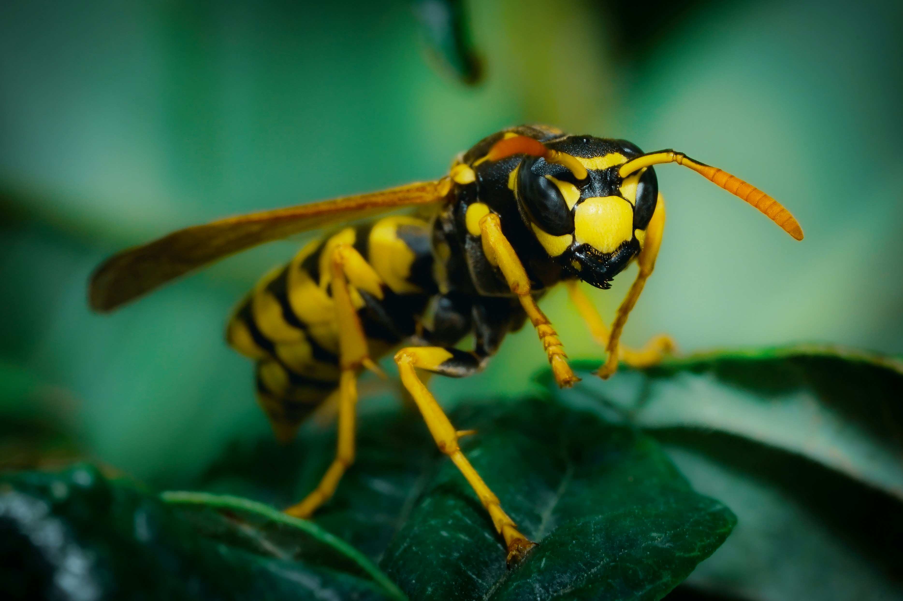
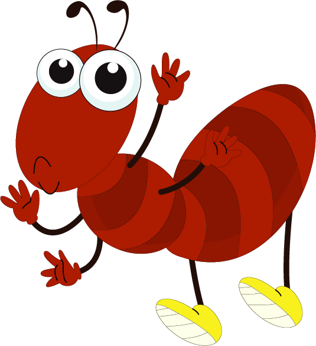
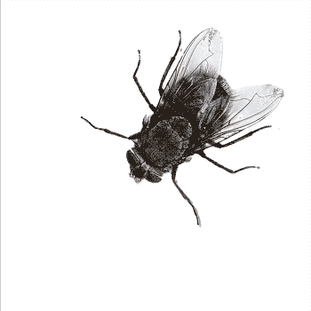

.png) POLINIZADORES Y SU IMPORTANCIA EN LA NATURALEZA
POLINIZADORES Y SU IMPORTANCIA EN LA NATURALEZA
La transferencia de polen puede llevarse a cabo mediante el viento, o el agua, pero en la gran mayoría de las plantas se lleva a cabo a través de animales polinizadores. Al alimentarse, accidentalmente quedan impregnados de polen que transportan a las siguientes flores que visitan. Es así que la polinización resulta benéfica para ambos organismos.
Insectos
Abeja

Al recolectar polen de una flor, que se adhiere a su cuerpo, y luego lo transfieren a otra flor al buscar néctar. Este proceso de transferencia de polen es crucial para la reproducción de las plantas y la formación de frutos.
Màs informaciòn »
Avispa

Aunque las avispas son menos eficientes que otros polinizadores, pues se les hace más difícil que el polen se pegue a su cuerpo, éstas son cruciales en la producción de los higos. La avispa es terrestre y necesita de climas templados para sobrevivir. El frío es la principal causa de su muerte.
Màs informaciòn »
Hormiga

Las hormigas son tan importantes como las abejas, estas permiten la aireación de los suelos, cuando empiezan sus nidos en la tierra permiten que el aire circule, lo cual es beneficioso porque la tierra tiene que respirar. Sin las hormigas los ecosistemas no existirían como los conocemos.
Màs informaciòn »
Mosca

Estos insectos adaptables pueden polinizar un amplio rango de plantas, lo que los hace valiosos en diversos entornos agrícolas. Desde frutas y verduras hasta frutos secos y cereales, pasando por plantas ornamentales para la producción de semillas.
Màs informaciòn »
Escarabajo
A diferencia de los demás insectos , estos se dedican a consumir partes de la flor, adhiriendo el polen a su cuerpo. Cumplen un papel importante en la polinización cruzada en especies de bosques tropicales, siendo atraídos por los aromas que volatilizan las flores, e incluso, utilizando estos sitios para realizar la cópula y colocando allí los huevos.
Mariposa
Sus orugas tienen un papel preponderante en el control de la vegetación y a su vez son una valiosa fuente de alimento para muchos animales. La polinización es una de las interacciones mutualistas más importantes que se dan en la naturaleza.
Màs informaciòn »